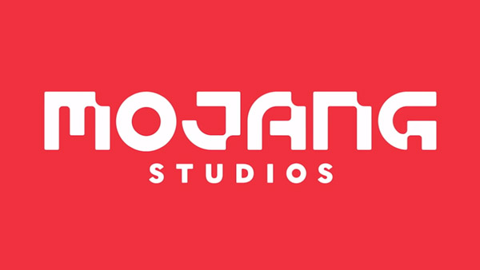

Minecraft é um jogo eletrônico sandbox de sobrevivência e construção criado originalmente por Markus "Notch" Persson e desenvolvido pela Mojang Studios (adquirida pela Microsoft em 2014). Lançado oficialmente em 2011 após sua fase alfa em 2009, tornou-se um dos jogos mais vendidos e influentes da história, permitindo explorar mundos gerados proceduralmente formados por blocos tridimensionais.

Java Edition: A edição clássica para PC (Windows, macOS e Linux), conhecida pelo suporte amplo a mods criados pela comunidade, servidores personalizados e mecânicas específicas.
Bedrock Edition: Presente em consoles, dispositivos móveis (Android e iOS) e Windows, oferece jogo multiplataforma (cross-play), acesso ao Minecraft Marketplace e serviços como o Realms (incluindo opções como o Realms Pro para grupos maiores).
Modos de jogo principais: No modo Sobrevivência, o jogador coleta recursos, fabrica ferramentas, administra fome e enfrenta criaturas à noite; no Criativo, há acesso ilimitado a blocos e voo livre para construir sem restrições de perigo. Também existem dificuldades variadas (como Pacífica e Difícil) e modos como Aventura e Espectador.